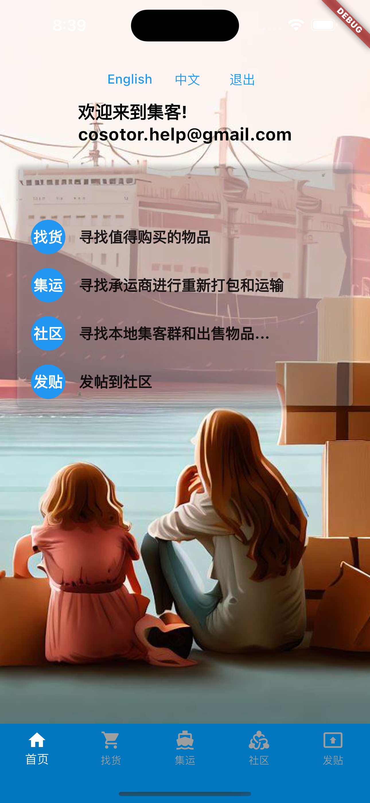
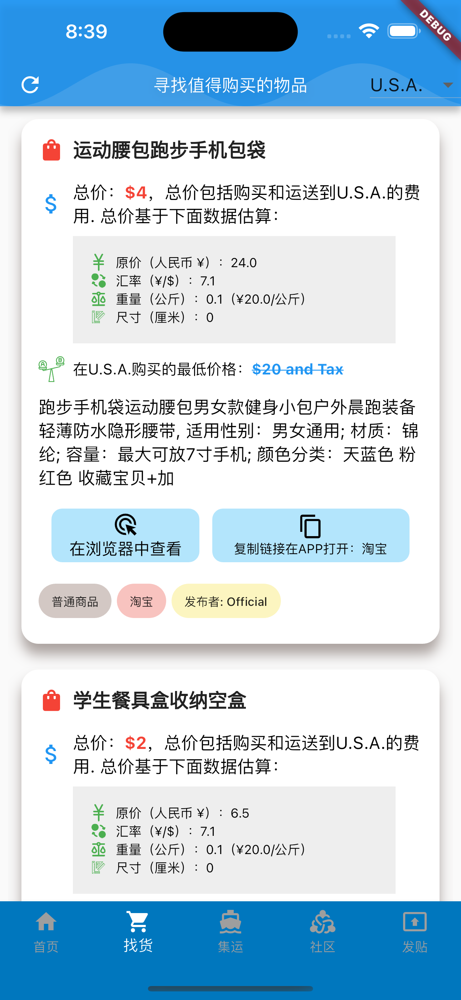
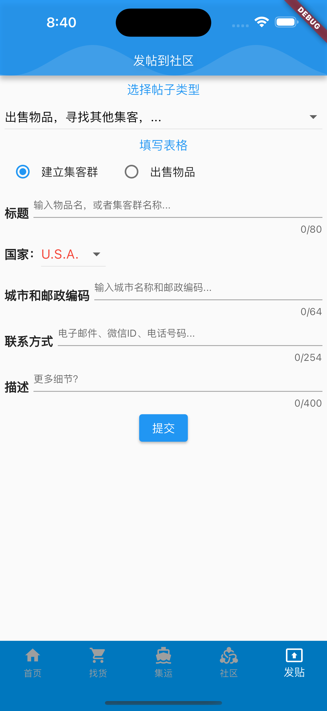
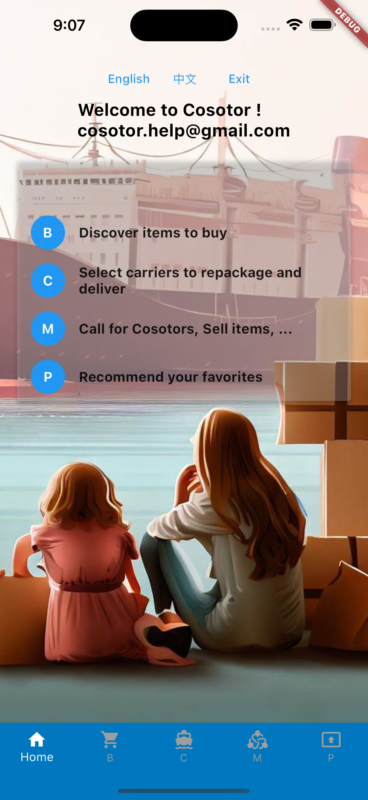

集客 是您的个人助手，旨在帮您从中国购买变得更加轻松和经济实惠。
Cosotor is your personal assistant, designed to make your buying from China easier and cheaper.
方式一：打开手机扫描下面二维码下载App（目前只支持Apple Store）
方式二：打开Apple Store，搜索“Cosotor"下载
方式三：点击链接下载 https://apps.apple.com/us/app/cosotor/id6469003712
| 主页 | 找货页 | 社区发帖页面 | 也支持英文 |
|---|---|---|---|
|  |  |  |  |
有问题请联系：cosotor.help@gmail.com
我们的主页 www.cosotor.com